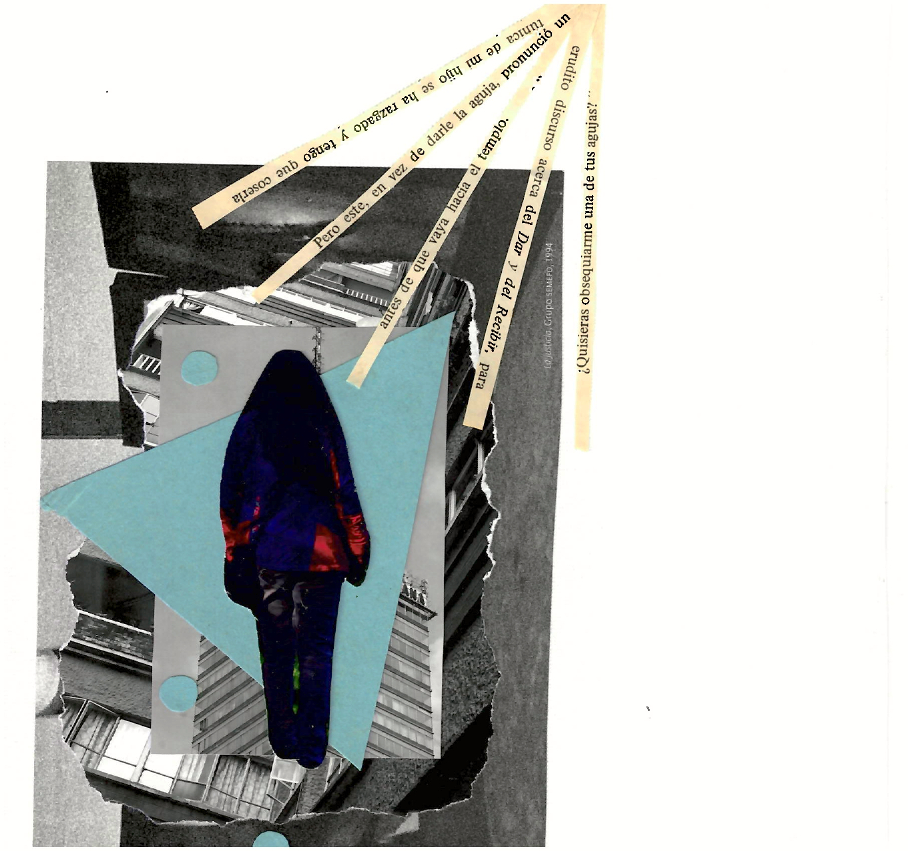
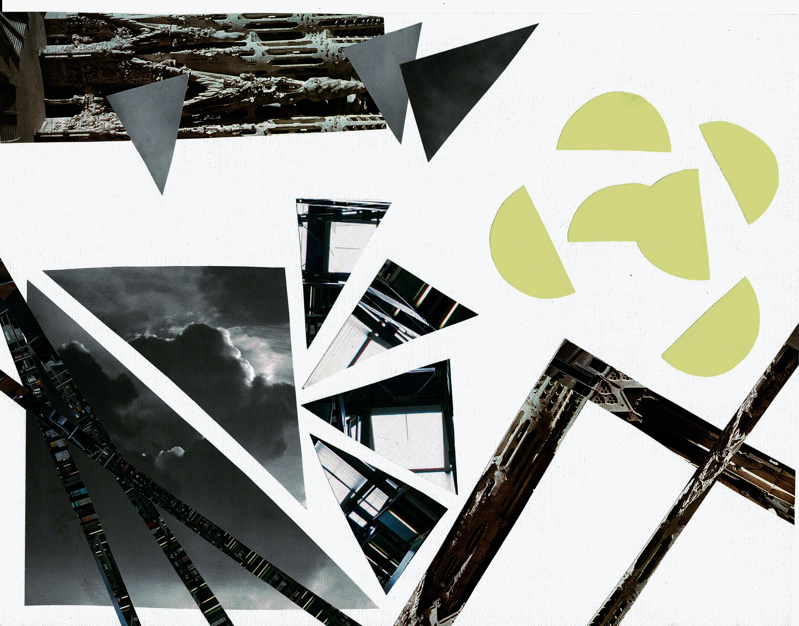

Soy estudiante en la licenciatura de arte y comunicación digitales, desde el año 2024, en la Universidad Autónoma Metropolitana, unidad Lerma. Me relaciono con la sociedad del ciberespacio, y aplico mis habilidades a la cultura digital. Hay cuestiones tecno-artísticas que se resuelven, a partir de las herramientas disponibles, y mi capacidad para abstraer lo aprendido.
Empleo elementos existentes en la cultura audiovisual, con el fin de engendrar obras artísticas, a partir de una perspectiva posthumanista. Mis gustos y pensamientos, se ven influenciados por lo que leo, las fotografías encontradas, y el tiempo con mis amigos.
Y ahora, las tecnologías del internet, me permiten crear sitios audiovisuales que remiten a una estética personal, y a los momentos más importantes de mi vida.